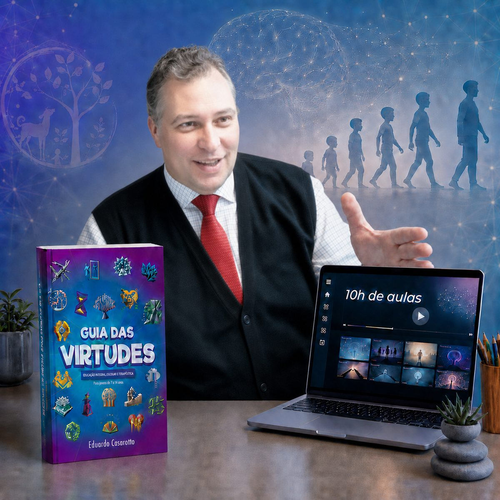
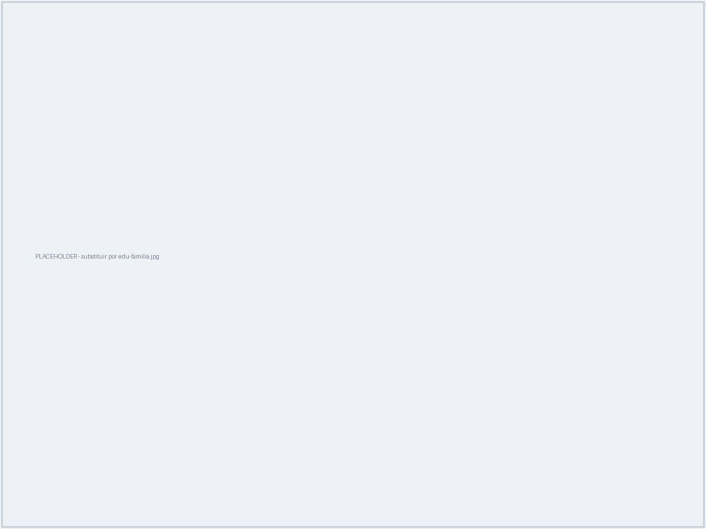
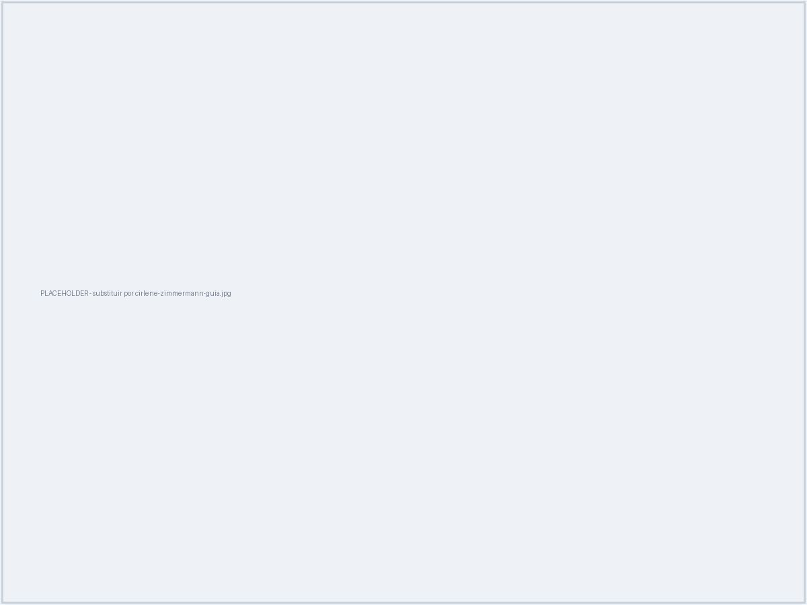
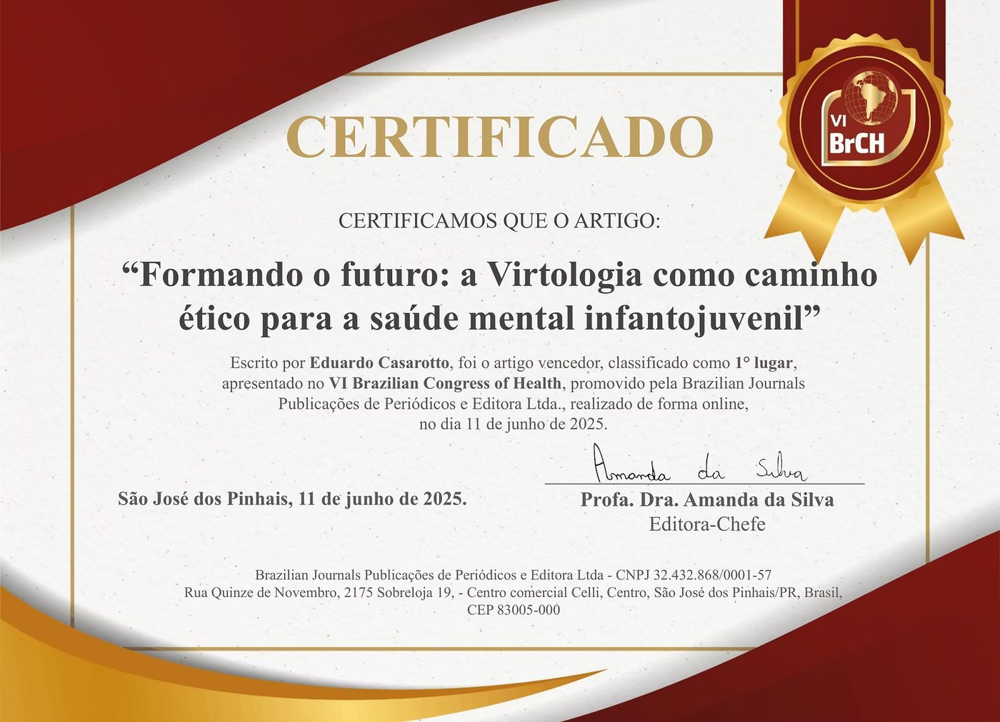
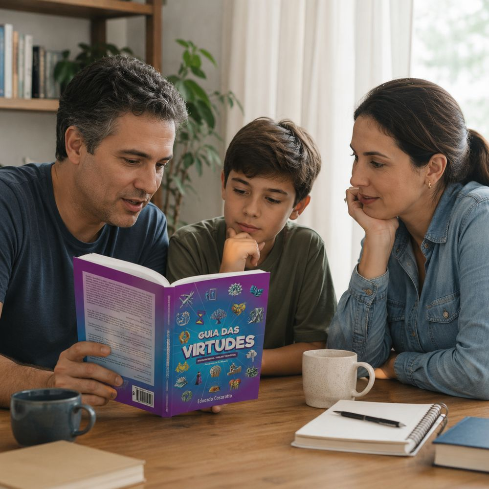
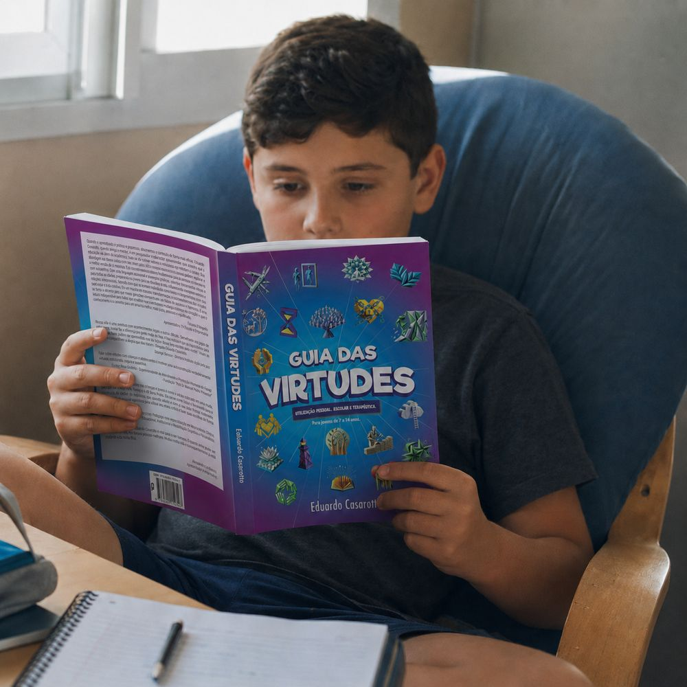
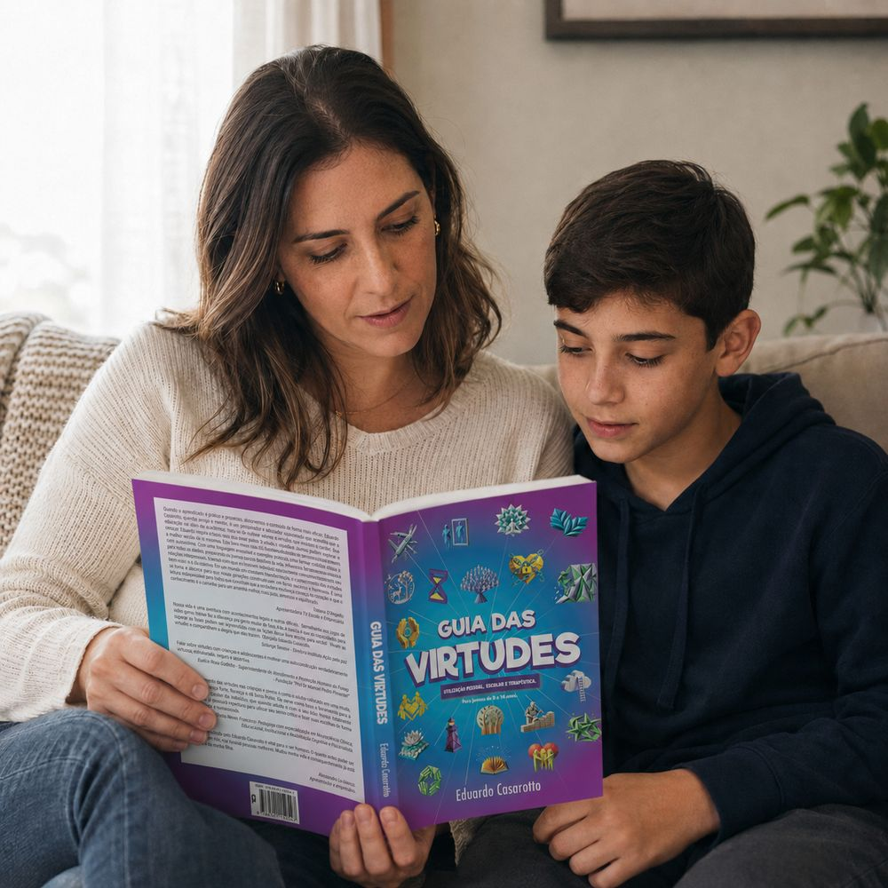

Guia das Virtudes · Eduardo Casarotto
O livro que desenvolve virtudes em crianças para uma mente saudável
Desenvolvido para uso dos 9 a 14 anos, os pais ainda recebem 10 horas de vídeo-aulas bônus online prontas para assistir, com a neurociência por trás de:
- O que gera traumas e vícios infantis
- Quais hábitos na infância criam adultos responsáveis e funcionais

Livro físico + 10h de vídeo-aulas bônus + apostila
R$ 147
frete incluso · ou 12x de R$ 14,70 no cartão
Quero levar virtudes para minha famíliaQuem é o autor?
Eduardo Casarotto é pesquisador, autor, consultor, filantropo, fundador do Instituto Virtudes e criador da Virtologia e da Humanização 2.0. Condecorado com o título de Comendador Cavaleiro pela Câmara de Justiça de São Paulo.
Com mais de 25 anos de atuação como terapeuta e consultor organizacional, formou mais de 2.000 terapeutas e dedicou sua trajetória ao estudo do funcionamento humano e da relação entre ambiente, comportamento e adoecimento.
Ao longo de sua atuação, desenvolveu trabalhos de formação e orientação metodológica para empresas, instituições públicas, organizações, hospitais, escolas e unidades prisionais, levando sua abordagem para contextos onde o funcionamento humano precisa ser compreendido não apenas no indivíduo, mas também nos sistemas em que ele vive e trabalha.
É autor de mais de 20 livros e de artigos publicados em periódicos científicos. Sua metodologia já foi apresentada no Plenário do Senado Federal, discutida em ambientes institucionais e aplicada em diferentes realidades humanas, organizacionais e sociais.
É também pai. O Guia das Virtudes é dedicado ao filho dele, e as aulas estão cheias dos acertos e dos erros de quem educa na prática o que ensina na teoria.


Metodologia premiada
O artigo que apresenta a metodologia do Guia das Virtudes, "Formando o futuro: a Virtologia como caminho ético para a saúde mental infantojuvenil", de Eduardo Casarotto, foi classificado em 1º lugar no VI Brazilian Congress of Health (Brazilian Journals, junho de 2025).

A diferença que as virtudes fazem
Quando desenvolvidas como memória de longo prazo - algo extremamente mais fácil em crianças, do que em adultos -, as virtudes alteram o funcionamento cerebral, mudando como se sentem e como reagem à vida.
O Guia das Virtudes não só ensina sobre virtudes, mas segue uma sequência para desenvolvê-las no cérebro das crianças.
É a diferença entre saber sobre, e virar padrão de agir e sentir.
Quando as virtudes ainda são frágeis
- Qualquer "não" vira uma crise
- Perder um jogo é o fim do mundo
- Quer tudo pronto, do jeito dela
- Erra e a culpa é sempre do outro
- Começa muito, termina quase nada
- É preciso lembrar dez vezes do que é responsabilidade dele
- Quando fica difícil, desiste ou pede que alguém resolva
- Mente ou esconde para fugir da consequência
- Na frustração, grita ou ataca
Quando as virtudes viram memória de longo prazo
- Ouve um "não" e a vida continua
- Aprende a esperar e a fazer a sua parte
- Erra, admite e procura consertar
- Se frustra sem perder o controle
- Persevera até terminar o que começou
- Começa a assumir o que já consegue fazer sozinho
- Tenta, procura uma saída e pede ajuda quando realmente precisa
- Entende que falar a verdade é mais importante que escapar do erro
- Aprende a ouvir, conversar e resolver sem destruir a relação
Nenhuma das duas colunas é questão de índole. É estrutura construída no cérebro, atitude por atitude, resposta por resposta. E estrutura se constrói: é para isso que o Guia das Virtudes foi criado.

Na infância, o cérebro está aprendendo o tempo inteiro
Mas com a situação atual do nosso mundo, o que ela aprende?
Para levá-la para o melhor lugar possível, o caminho é com virtudes.
O que virtudes fazem no cérebro?
Virtude não é assunto de religião. É assunto de neurologia.
Cada virtude é elaborada pelo lobo frontal, a região responsável pelas funções executivas: planejar, esperar, inibir o impulso, considerar o outro, decidir por princípio. Praticar virtudes, do jeito estruturado que o Guia propõe, é treinar exatamente essa região.
Muda a reação à frustração: o "não" deixa de ser gatilho de crise.
Aumenta a disciplina: começar, sustentar e terminar o que foi combinado.
Fortalece a paciência: a pausa entre o impulso e a resposta cresce.
Constrói responsabilidade: o que é da criança passa a ser assumido por ela.
É por isso que o mesmo material funciona em casa, na escola e no consultório: o que se treina é o cérebro, não a crença.
O que chega na sua casa
O livro, para a criança
As 33 virtudes na linguagem de quem tem 9 a 14 anos: o que cada uma é, uma história que mostra a virtude em ação e práticas simples para o dia a dia. 352 páginas, para ler junto ou sozinho.
As vídeo-aulas bônus, para quem educa
10 horas de vídeo-aulas bônus online, prontas para assistir, com Eduardo Casarotto. É a formação dos pais: como o caráter se constrói, o que traumatiza, o que fortalece, e o que cada fase da vida precisa.
A apostila, para consultar
O conteúdo das aulas bônus organizado por escrito, para revisar sempre que uma fase nova chegar.

Feito para gerar neuroplasticidade
Neurociência aplicada ao desenvolvimento do caráter. O que a criança entende e vive, grava. Por isso, cada uma das 33 virtudes do livro segue a mesma sequência, na ordem em que esse cérebro aprende:
Entender a virtude
O que ela é, por que importa e 20 formas de praticar no dia a dia. Curto e direto, do jeito que essa idade aprende.
Ver a história
Uma história com a virtude em ação. A narrativa grava com emoção o que a explicação sozinha não grava.
Viver a atividade
Um exercício guiado para fazer em família ou em sala, com material e roteiro de reflexão. A experiência vivida é o que vira estrutura.
Fazer a provinha
Perguntas para a criança responder sobre o que aprendeu. Buscar a resposta na memória é o que consolida o aprendizado.
Seguida a sequência, virtude por virtude, a criança não decora um valor: constrói uma memória de longo prazo. E o que é memória de longo prazo passa a operar sozinho.
Cada atividade do livro descreve as reações neurais e corporais que ela ativa, as habilidades cognitivas que desenvolve e as áreas da BNCC em que se encaixa. A família, o professor e o terapeuta sabem exatamente o que estão treinando. No fim do percurso, a criança preenche a ficha de autoavaliação das 33 virtudes e recebe o certificado que fecha o livro.

As 10 horas de vídeo-aulas bônus
Online, prontas para assistir. Não é conselho de criação. É o mecanismo: o que acontece no cérebro do seu filho a cada resposta que ele recebe, explicado por quem passou 25 anos atendendo as consequências.
Assuntos abordados:
Como o caráter se constrói
Cada atitude da criança recebe do meio uma resposta que reforça, modifica ou inibe. Essa matemática, repetida por anos, é a personalidade. Aqui você aprende a jogar com ela a favor.
Onde nascem os transtornos
Ansiedade, perfeccionismo, isolamento, agressividade: cada um tem uma estrutura, e ela se monta na infância. O que o excesso de punição constrói. O que a tela está substituindo.
Tarefas que constroem, tarefas que estragam
O equilíbrio entre compromisso e lazer, consigo e com os outros. Como dar tarefas que formam responsabilidade e senso de comunidade, e quais fabricam egoísmo sem querer.
Lidando com o que já se instalou
Para o padrão que já apareceu: as técnicas práticas para interromper comportamentos e a virtude que desmonta cada estrutura, caso a caso.
As fases: do útero à latência
O que cada idade precisa viver, e o que acontece quando pula. Porque o trauma não vem só do que a criança viveu: vem também do que ela precisava viver e não viveu.
As fases: da adolescência à vida adulta
Dos primeiros amores às primeiras escolhas de verdade: o que muda no cérebro dos 15 aos 20 e poucos, e como preparar a saída para o mundo.
Depois das aulas bônus, você sabe responder
- Por que não dizer nada também educa, e o que o silêncio ensina
- Qual é a diferença exata entre corrigir e traumatizar
- O que uma bronca desproporcional constrói no cérebro, e não é disciplina
- Por que a criança que nunca ouviu "não" chega despreparada à vida adulta
- O que a tela está ocupando no lugar das experiências que formam caráter
- Que experiência cada fase precisa, do útero à saída de casa
- Como reagir quando o filho quebra algo tentando ajudar, e por que essa cena define muito
Educar sem saber disso é educar no escuro. E ninguém precisa mais educar no escuro.
O que aconteceu com quem já usa o livro?
"Meu filho tinha muita dificuldade quando alguma coisa acontecia diferente do que ele queria. Perder um jogo, mudar um passeio ou ouvir um não geralmente terminava em discussão. Depois que começamos a trabalhar as virtudes com o livro, ele aceita muito mais rápido, sem frustração. Outro dia um passeio foi cancelado e ele mesmo falou: 'Tudo bem, então vamos fazer outra coisa'. Antes, ele daria chilique. Foi uma mudança enorme."
Lúcio, pai de Thiago
"Com as aulas que vieram junto com o livro, percebi que fazia praticamente tudo pelo meu filho: arrumava a mochila, lembrava de todas as tarefas, buscava as coisas que ele esquecia. Começamos a mudar isso juntos e hoje ele prepara a própria mochila, acompanha as tarefas da escola e, quando esquece alguma coisa, entende que aquilo é responsabilidade dele. Mudou o comportamento dele e minha forma de educar."
Tatiana, mãe de Alessandro
"Uma das mudanças que mais me chamou atenção foi ele começar a admitir os próprios erros. Antes isso nunca aconteceria. Quando ele fazia alguma coisa errada, a primeira reação era tentar uma desculpa. Aprendendo sobre as virtudes, comecei a ouvir mais vezes: 'Mãe, fui eu. Eu fiz errado'. Para mim, isso vale muito mais do que simplesmente ele obedecer."
Rosana, mãe de Lucas
"Minha filha desistia muito rápido quando achava alguma coisa difícil. Fazia birra, chorava e desistia. Isso acontecia na escola, no esporte e em brincadeiras também. Trabalhamos a virtude da perseverança durante algumas semanas e começamos a usar a linguagem do livro no dia a dia. Hoje ela ainda pode reclamar quando algo é difícil, mas não para de tentar. Ela mesma fala: 'Vou tentar mais uma vez'."
Cláudia, mãe de Giovanna
"O que mais me surpreendeu foi perceber que as virtudes começaram a aparecer espontaneamente nas conversas e nas atitudes. Eu não preciso mais dizer sempre 'lembra do livro'. Às vezes meu filho fala 'acho que preciso ter paciência agora' ou 'eu não estava aceitando isso'. Quando ele começou a usar esses conceitos para interpretar a própria vida, você percebe que o conteúdo realmente entrou."
Giselle, mãe de Fernando
"Quando acontecia algum problema, nossas conversas terminavam facilmente em bronca ou discussão. O Guia deu uma linguagem diferente pra gente. Agora até conseguimos perguntar: 'Que virtude está faltando aqui? O que você poderia fazer diferente?'. Isso tirou muito peso da nossa comunicação e levou para o lugar de aprendizado."
Bianca, mãe de Gabriela
"As aulas para pais foram tão importantes quanto o livro. Eu comecei a perceber que algumas atitudes minhas estavam reforçando justamente comportamentos que eu queria corrigir. Depois que entendi isso e comecei a agir diferente, a mudança apareceu naturalmente, foi incrível."
Rogério, pai de Felippi
"Antes eu precisava repetir dez vezes algumas coisas. Depois de trabalhar algumas virtudes, percebi que ele começou a fazer algumas tarefas sem que eu mandasse. Não virou outra criança da noite para o dia, mas hoje existe muito mais iniciativa. Em tão pouco tempo, achei bom demais."
Antônio, avô de Leandro
"Usamos muito a virtude da paciência, do perdão e da brandura porque meus dois filhos brigavam bastante. As brigas não desapareceram, mas hoje eles tentam resolver conversando. Tem sido comum um deles voltar para pedir desculpas depois."
Cristiane, mãe de Bernardo e Mateus
"Nós começamos a aplicar o Guia em casa e, depois de algum tempo, a própria professora comentou que ele estava mais calmo e lidando melhor com correções. Ela não sabia que estávamos fazendo o trabalho. Quando alguém de fora percebe a mudança assim, achei muito significativo."
Lindalva, mãe de Rodrigo
"No começo meu filho achou que seria 'livro de criança' e não queria fazer. Quando começamos a conversar sobre situações que realmente estavam acontecendo com ele - amizades, frustração, escola, responsabilidade - ele começou a participar. O que funcionou foi não transformar o livro em obrigação, mas em assunto para conversar, e com o tempo ele adorou."
Cris, mãe de Pedro
"Eu comprei pensando nos meus filhos e percebi que várias virtudes também estavam faltando em mim. Quando falávamos sobre paciência, eu percebia minha própria impaciência. Quando falávamos sobre aceitação, eu percebia meu excesso de controle. No final, virou um trabalho da família inteira."
Sirlene, mãe de Roberta e Luan
Livro físico + 10h de vídeo-aulas bônus + apostila
R$ 147
frete incluso · ou 12x de R$ 14,70 no cartão
Quero levar virtudes para minha famíliaO que costumam perguntar
Para que idade é?
O livro foi escrito para quem tem 9 a 14 anos, em linguagem própria dessa idade, e serve para uso pessoal, escolar e terapêutico. As aulas bônus são para os adultos, e cobrem da gestação à chegada na vida adulta: servem para quem tem filho de qualquer idade.
Preciso conhecer a Virtologia antes?
Não. Tudo é explicado do zero, nas aulas e no livro.
É um material religioso?
Não. As 33 virtudes vieram de uma pesquisa sobre o que dezenas de tradições têm em comum, mas o material não professa nenhuma religião. O trabalho é sobre o funcionamento do cérebro.
Serve para professores e terapeutas?
Serve, e muito: o livro já nasceu para uso escolar e terapêutico, e as aulas bônus foram dadas numa capacitação para educadores. Mas a página que você está lendo foi escrita para famílias, porque é em casa que o caráter mais se constrói.
Substitui acompanhamento profissional?
Não. Se a criança já apresenta um quadro que preocupa, o material soma com o acompanhamento profissional e não fica no lugar dele.
Para quem quiser ir mais fundo depois, o caminho natural é o Manual de Desenvolvimento Humano em Virtudes, com os exercícios de neuroplasticidade dos adultos:
Conhecer o Manual